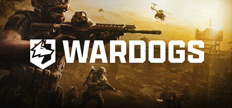

WARDOGS

Official capsule art, WARDOGS. Reproduced from Steam store assets.
The flagship. A hundred players, three teams, one Control Zone worth dying for — repeatedly, and usually stupidly. Everybody starts each life with $10,000 and a menu full of ways to spend it badly.
The noobs are easy to spot: sprinting into the open zone with no armor because the vest ate into gun money, buying a vehicle then immediately rolling it into the only ravine on the map, and unloading a full mag at a silhouette that turns out to be a teammate. It happens to everyone exactly once. It happens to some people every single round.
The hardcore crowd is a different disease entirely — loadout spreadsheets, memorized Control Zone rotations, and a genuine moral crisis every time they die with unspent cash still in the bank. Give it a few weeks and the FTA server will have both types in the same squad, yelling at each other over comms about who flipped the truck this time.
This is the server we're building the clan around for the foreseeable future. Join in, die badly, get better, repeat.
- Genre
- Tactical Warfare FPS
- Party Size
- 100-Player, 3 Teams
- Platform
- PC (Steam)
- FTA Status
- Flagship Rotation — Dedicated Server Live
Direct Connect: 208.115.223.188:7787
In-game, use the server browser and search “FTA”, or plug the address above straight into Direct Connect. No password, no application — show up, buy a loadout you can't afford, and go.